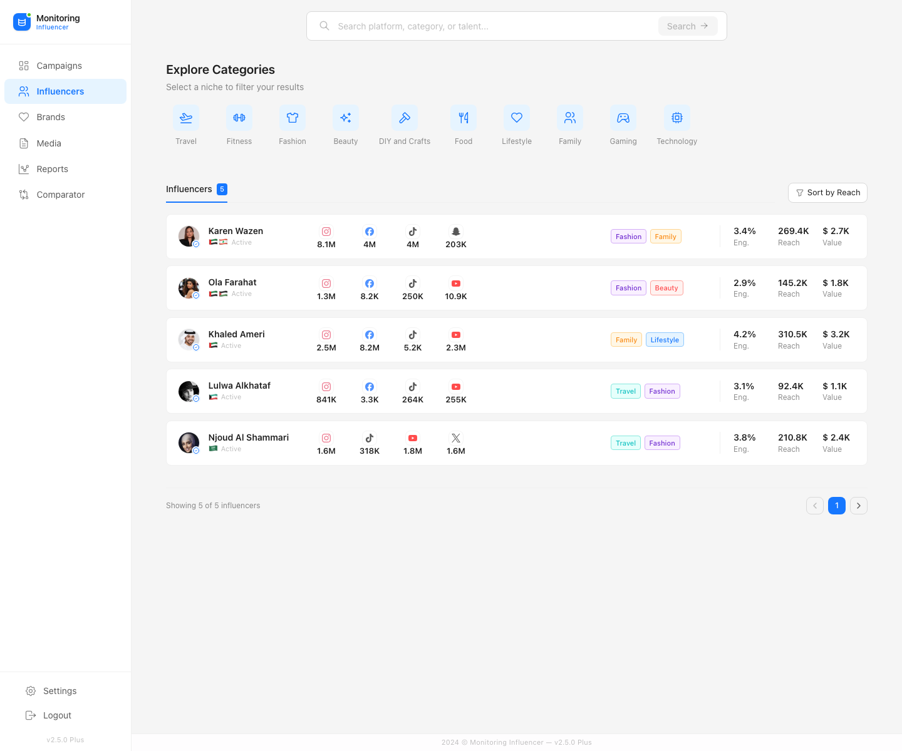

Influencer
Monitoring
A data-driven platform for tracking influencer performance and campaign effectiveness, featuring AI analysis modules and streamlined monitoring workflows.
Start in the real product.
Explore the live interface before reading the case study. Then follow the journey from the initial problem, through the key product choices, to the decisions that shaped the delivered experience.
Tracking influencers is manual and fragmented
Marketing teams managing influencer campaigns often rely on spreadsheets, scattered tools, and manual processes to track performance. There was no unified platform to monitor influencer effectiveness, measure campaign results, and make data-driven decisions — all in one place.
A data-driven monitoring platform
I designed a unified platform that centralizes influencer tracking, campaign performance monitoring, and AI-powered analysis into one intuitive interface — improving monitoring efficiency by 30%.
Start with a signal, not a spreadsheet.
Search was designed as the entry point to the product: one place to discover creators by platform, category and talent, then narrow the results without losing the decision context.
Instead of separating search, filtering and evaluation into different tools, the information architecture keeps them in one connected flow. Teams can discover, scan and decide without rebuilding context.

Turn monitoring into a shareable decision.
Reporting gives teams a clear path from evidence to communication. The workflow makes it easier to package performance signals for stakeholders without rebuilding the story in a separate tool.
The choice was to connect reporting to the same entities teams already explore, so the evidence stays close to the recommendation.
Reports
Explore the live Reports module directly in the embedded product above.
Open live product ↗Make trade-offs visible.
Comparison became a key workflow because a single profile rarely answers the decision. Teams need to understand differences across creators, campaigns and time periods before committing budget.
The interface keeps comparable signals and their context together, making strengths, gaps and budget trade-offs easier to discuss.
Comparator
Use the live product navigation to open Comparator and test the delivered workflow.
Explore comparator ↗How I designed it
This project focused on turning influencer campaign monitoring into a clearer, faster product experience for marketing teams.
Understand the real work
What I did Mapped the fragmented journey across spreadsheets, social platforms and campaign updates. I focused on the points where teams lost time, context and confidence.
Decision made: start with the user’s decision moment—not a dashboard wish list.Choose the product focus
What I did Turned the research into a clear product scope: creator discovery, campaign context and performance visibility.
Decision made: reject a broad command centre; build one connected monitoring flow.Test the information hierarchy
What I did Explored how search, creator signals, reports and comparison could use the same data language while revealing detail progressively.
Trade-off: fewer competing metrics in each view, clearer next actions.Align product, data and engineering
What I did Translated the chosen patterns into reusable components, high-fidelity behaviours and handoff-ready states.
Outcome: a shipped monitoring experience that can grow with the platform.Key takeaways
30% improvement in monitoring efficiency
The data-driven interface and streamlined workflows significantly reduced the time teams spent on manual influencer tracking.
AI-integrated prototypes
Delivered high-fidelity prototypes with AI analysis modules that demonstrated how smart insights could drive better campaign decisions.
Persona-driven design decisions
Every design choice was grounded in real user personas and validated workflows, ensuring the platform addressed actual pain points.